the returns policy doc sitting in my documents folder is a mess - swap every "Pedal & Post Cycles" to "Pedal & Post Cycle Co." throughout, make each of the four section headings bold and 14pt, and drop the whole thing to a pdf next to it keeping the same base name
THINKINGLet me first find the document. I'll open the Files application or terminal to locate the returns policy doc in the Documents folder. Using the terminal is more reliable for finding the file and inspecting it. Let me open a terminal.
ACTIONLet me open a terminal to locate the document in the Documents folder.
EXECUTED (pyautogui in VM)pyautogui.press("return")
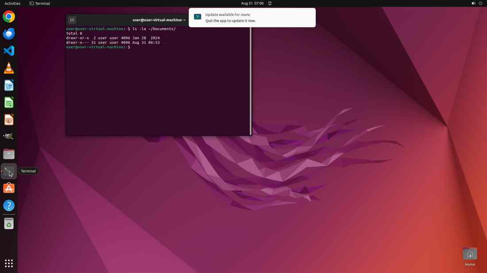
step 5 23:02:36
THINKINGThe Documents folder only shows . and .. — it's empty. There's no returns policy doc here. The task says "sitting in my documents folder". Maybe it's in a different location, or a different Documents folder. Let me search the whole home directory for files with "return" or "policy" or "Pedal" in name/content. Let me search broadly.
ACTIONThe Documents folder appears empty. Let me search the home directory for the returns policy document by name and content.
EXECUTED (pyautogui in VM)pyautogui.press("return")
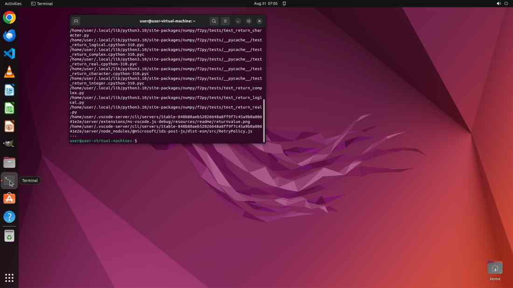
step 7 23:07:12
THINKINGThe results are all system/library files (numpy tests, vscode), and the "pedal" search after "---" returned nothing. So there's no returns policy doc found by name. Let me search by content for "Pedal & Post" in documents, and also check common file types. Let me grep for "Pedal" in doc/docx/txt/md/odt files in the home directory, excluding hidden dirs and .local/.vscode.
ACTIONThe name search only matched system files. Let me search by content for "Pedal" in likely document files, excluding hidden directories.
EXECUTED (pyautogui in VM)pyautogui.press("return")
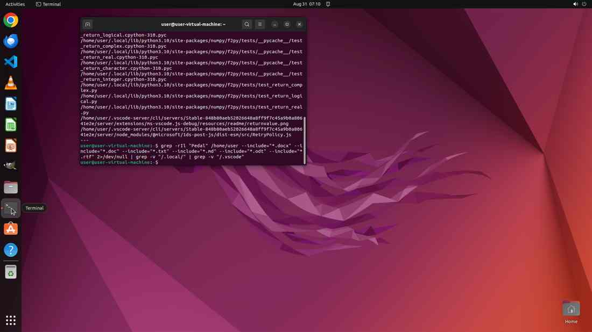
step 9 23:13:35
THINKINGThe grep returned no results for "Pedal" in those document file types. So the doc isn't found in the standard document extensions, and the Documents folder is empty. The task refers to "my documents folder". Perhaps the file has a different extension. Let me do a broader search: grep for "Pedal" across all of /home/user excluding .local and .vscode and .config, to find the file regardless of extension.
ACTIONNo matches in those extensions. Let me do a broader content search across the home directory for "Pedal", excluding system/config directories.
THINKINGThe grep for "Pedal & Post" returned nothing (prompt returned). The "&" in grep means literal since I'm using fixed pattern matching... actually "Pedal & Post" with the space and & — grep treats it as a regex where & is literal (it's only special in sed replacement). So it's searching for "Pedal & Post" literally. No matches.
The Documents folder is empty and no file contains "Pedal & Post" in the home directory. Maybe the file is a .docx (zip) which grep can't read as plain text. My earlier grep with --include="*.docx" returned nothing because docx is binary/zip so grep -I skips it. Let me search docx files specifically using unzip-based content search. But better: let me list all files in home that look like user documents. Let me look at the full home dir top-level and any non-hidden folders.
ACTIONgrep can't read inside .docx (zip) files. Let me look at the actual directory structure of the home folder to find user documents.
TOOL CALL<tool_call>
<function=computer_use>
<parameter=action>
type
</parameter>
<parameter=text>
ls -la /home/user/; echo "==="; find /home/user -maxdepth 2 -type d -not -path "*/.*" 2>/dev/null
</parameter>
</function>
</tool_call>
EXECUTED (pyautogui in VM)pyautogui.typewrite("ls -la /home/user/; echo \"===\"; find /home/user -maxdepth 2 -type d -not -path \"*/.*\" 2>/dev/null")
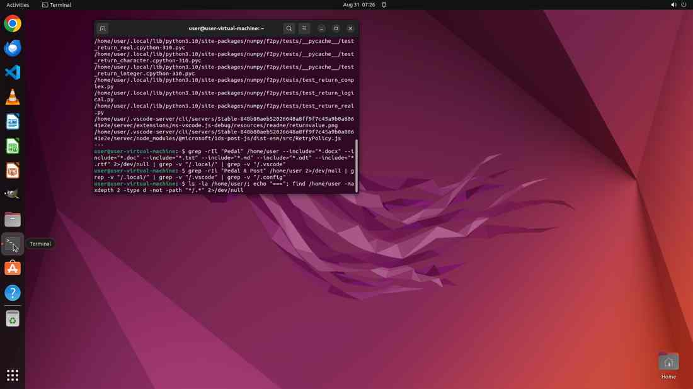
step 13 23:27:09
THINKINGThe window is small. Let me maximize it first for readability, then run. Actually let me just press Enter and read. The output may be long. Let me maximize the terminal to see better.
ACTIONLet me maximize the terminal for readability before running.
EXECUTED (pyautogui in VM)pyautogui.click(930, 76)
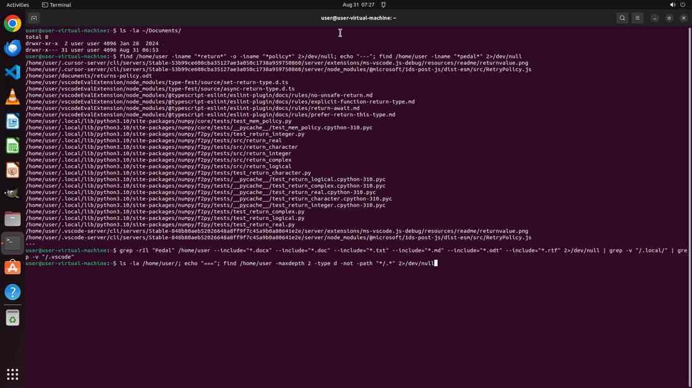
step 14 23:28:30
THINKINGNow I can see clearly. In the earlier find output (the *return*/*policy* name search), there is:
`/home/user/documents/returns-policy.odt`
There's a lowercase `documents` folder (not `Documents`). That's the "documents folder" the user means. The file is `returns-policy.odt`. So the base name is "returns-policy".
Let me confirm and inspect it. The command I typed (ls -la /home/user; find) is still pending at the prompt. Let me run it to confirm, then examine the odt.
ACTIONI found it: `/home/user/documents/returns-policy.odt` (lowercase "documents" folder). Let me confirm the folder contents and inspect the file.
EXECUTED (pyautogui in VM)pyautogui.press("return")
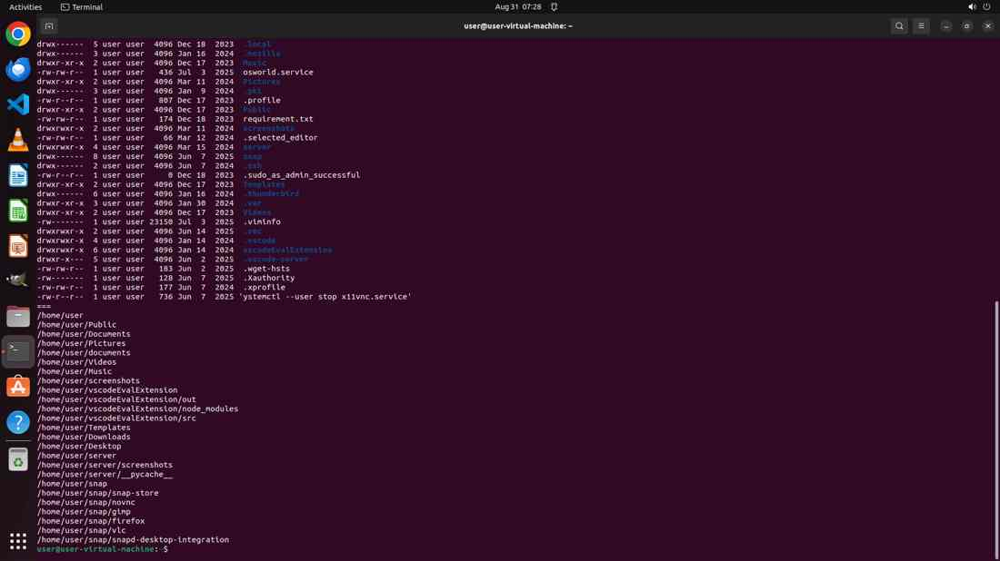
step 15 23:32:11
THINKINGConfirmed both `/home/user/Documents` and `/home/user/documents` exist. The doc is in the lowercase `documents` folder: `/home/user/documents/returns-policy.odt`.
Now I need to:
1. Open the ODT, view its content (to understand the four section headings).
2. Replace every "Pedal & Post Cycles" → "Pedal & Post Cycle Co."
3. Make the four section headings bold and 14pt.
4. Export/save as PDF next to it, keeping the same base name → `/home/user/documents/returns-policy.pdf`.
The best tool for this is LibreOffice Writer. Editing the ODT directly in the GUI is the reliable approach per the guidelines (use GUI, not scripts). I should open it in LibreOffice Writer.
Let me first inspect the content to know what the headings are. Let me convert or extract text from the odt. I'll use the terminal to peek at the text for planning, but do the actual edits in LibreOffice GUI. Let me extract text using python or unzip content.xml. Actually, let me just open it in LibreOffice Writer to see it visually.
Let me open the file with LibreOffice Writer.
ACTIONConfirmed. The document is `/home/user/documents/returns-policy.odt` in the lowercase `documents` folder. Let me peek at its text content first for planning, then edit it in LibreOffice Writer.
TOOL CALL<tool_call>
<function=computer_use>
<parameter=action>
type
</parameter>
<parameter=text>
cd /home/user/documents && ls -la && echo "===" && unzip -p returns-policy.odt content.xml | sed 's/<[^>]*>/ /g' | tr -s ' ' | head -c 3000
</parameter>
</function>
</tool_call>
EXECUTED (pyautogui in VM)pyautogui.typewrite("cd /home/user/documents && ls -la && echo \"===\" && unzip -p returns-policy.odt content.xml | sed 's/<[^>]*>/ /g' | tr -s ' ' | head -c 3000")
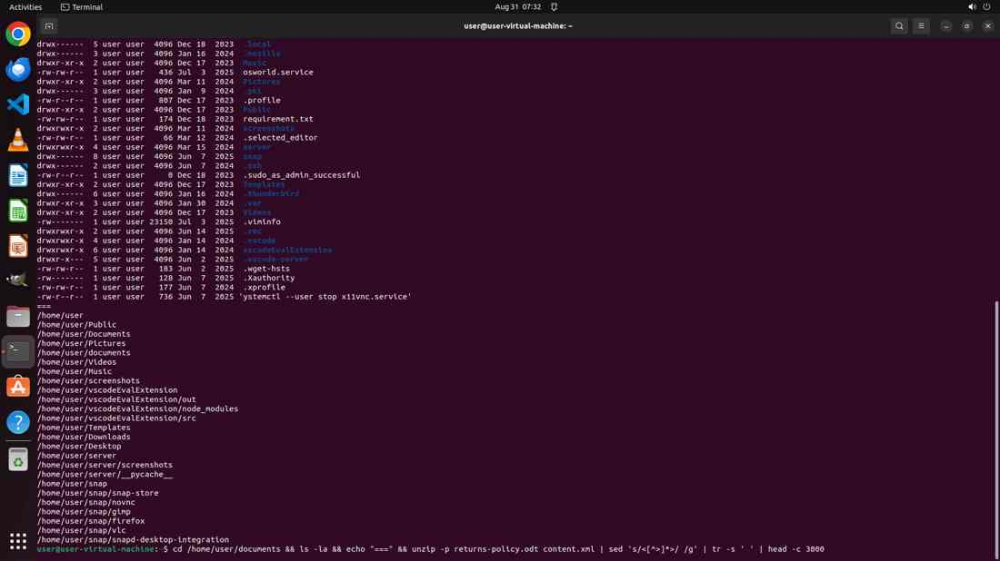
step 16 23:35:36
THINKINGThe command is typed at the prompt but not yet run (I see it at the bottom). Let me press Enter to run it.
EXECUTED (pyautogui in VM)pyautogui.press("return")
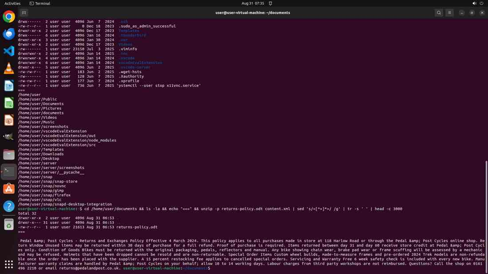
step 17 23:38:00
THINKINGThe documents folder contains just returns-policy.odt. The content starts with:
"Pedal & Post Cycles - Returns and Exchanges Policy Effective 4 March 2024. This policy applies to all purchases made in store at 118 Harlow Road or through the Pedal & Post Cycles online shop. Return Window Unused items may be returned within 30 days..."
So the text contains "Pedal & Post Cycles" (the & is XML-encoded as &). The display text is "Pedal & Post Cycles". I need to replace it with "Pedal & Post Cycle Co."
I need to see the four section headings. The text is continuous (headings may be styled paragraphs). Let me get the full text with paragraph breaks. Let me extract text more structurally. I'll use a python one-liner with the odf approach, or better, replace </text:p> with newline. Let me dump content.xml text with paragraph boundaries.
ACTIONThe document is a single `returns-policy.odt`. Let me view the full text with paragraph breaks to identify the four section headings.
TOOL CALL<tool_call>
<function=computer_use>
<parameter=action>
type
</parameter>
<parameter=text>
unzip -p returns-policy.odt content.xml | sed 's/<text:p /"\n<text:p /g; s/<text:h /"\n<text:h /g' | sed 's/<[^>]*>//g'
</parameter>
</function>
</tool_call>
EXECUTED (pyautogui in VM)pyautogui.typewrite("unzip -p returns-policy.odt content.xml | sed 's/<text:p /\"\\n<text:p /g; s/<text:h /\"\\n<text:h /g' | sed 's/<[^>]*>//g'")
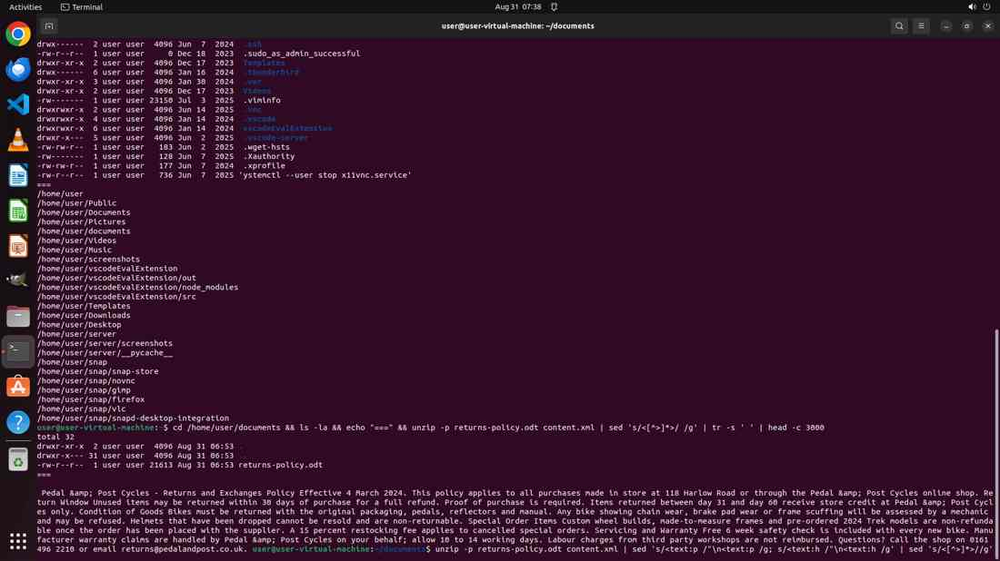
step 18 23:38:54
THINKINGThe command is typed but not executed. Press Enter.
EXECUTED (pyautogui in VM)pyautogui.press("return")
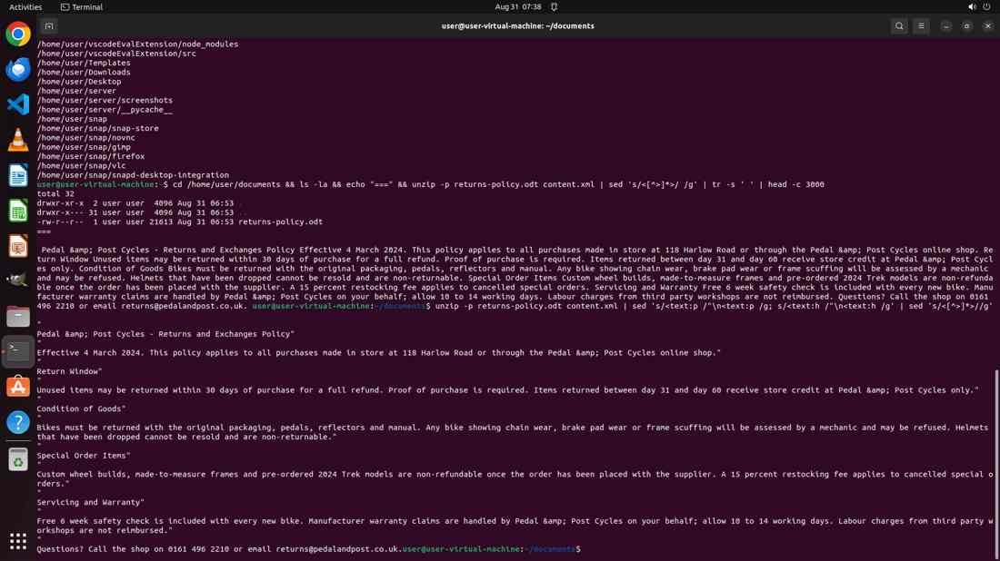
step 19 23:40:13
THINKINGNow I have the full structure. The document paragraphs are:
1. "Pedal & Post Cycles - Returns and Exchanges Policy" (title)
2. "Effective 4 March 2024. This policy applies to all purchases made in store at 118 Harlow Road or through the Pedal & Post Cycles online shop."
3. "Return Window" (heading 1)
4. "Unused items may be returned within 30 days of purchase for a full refund. Proof of purchase is required. Items returned between day 31 and day 60 receive store credit at Pedal & Post Cycles only."
5. "Condition of Goods" (heading 2)
6. "Bikes must be returned with the original packaging, pedals, reflectors and manual. Any bike showing chain wear, brake pad wear or frame scuffing will be assessed by a mechanic and may be refused. Helmets that have been dropped cannot be resold and are non-returnable."
7. "Special Order Items" (heading 3)
8. "Custom wheel builds, made-to-measure frames and pre-ordered 2024 Trek models are non-refundable once the order has been placed with the supplier. A 15 percent restocking fee applies to cancelled special orders."
9. "Servicing and Warranty" (heading 4)
10. "Free 6 week safety check is included with every new bike. Manufacturer warranty claims are handled by Pedal & Post Cycles on your behalf; allow 10 to 14 working days. Labour charges from third party workshops are not reimbursed."
11. "Questions? Call the shop on 0161 496 2210 or email returns@pedalandpost.co.uk."
So the four section headings are:
- Return Window
- Condition of Goods
- Special Order Items
- Servicing and Warranty
"Pedal & Post Cycles" appears in:
- Title (para 1): "Pedal & Post Cycles - Returns..."
- Para 2: "...through the Pedal & Post Cycles online shop."
- Para 4: "...receive store credit at Pedal & Post Cycles only."
- Para 10: "...handled by Pedal & Post Cycles on your behalf;"
So 4 occurrences of "Pedal & Post Cycles". I need to replace all with "Pedal & Post Cycle Co."
Now my plan:
1. Open the ODT in LibreOffice Writer.
2. Use Find & Replace (Ctrl+H) to replace "Pedal & Post Cycles" → "Pedal & Post Cycle Co." (all).
3. Select each of the four heading paragraphs and apply Bold + 14pt font size.
4. Export as PDF to the same folder with the same base name: File → Export As → Export as PDF, save as returns-policy.pdf.
Let me open the file in LibreOffice Writer. I'll use the terminal to launch it.
ACTIONI now have the full document structure. The four section headings are: **Return Window**, **Condition of Goods**, **Special Order Items**, and **Servicing and Warranty**. There are 4 occurrences of "Pedal & Post Cycles". Let me open the file in LibreOffice Writer to make the edits via the GUI.
THINKINGThe document is open in LibreOffice Writer. I can see all content. The four headings are: "Return Window", "Condition of Goods", "Special Order Items", "Servicing and Warranty".
Let me close the notification bars first, then do Find & Replace.
Let me start with Find & Replace (Ctrl+H). I'll close the two info bars by clicking the X buttons. Then Ctrl+H.
Actually, I can just proceed. Let me close the notification bars to have a clean view, then open Find & Replace.
ACTIONThe document is open. Let me close the notification bars, then open Find & Replace to swap all "Pedal & Post Cycles" occurrences.
EXECUTED (pyautogui in VM)pyautogui.click(1845, 184)
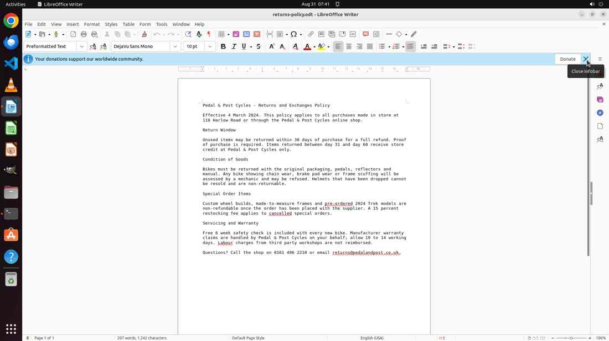
step 23 23:42:08
THINKINGOne bar remains. Let me close it, then open Find & Replace with Ctrl+H. I'll batch: click the X, then press Ctrl+H, then type in the fields. But I should see the dialog layout first before typing into fields. Let me close the bar and open the dialog, then screenshot.
EXECUTED (pyautogui in VM)pyautogui.hotkey("ctrl", "h")
step 25 23:43:21
THINKINGThe Find and Replace dialog is open. Let me click the Find field, type "Pedal & Post Cycles", tab to Replace, type "Pedal & Post Cycle Co.", then click Replace All.
The Find field is at ~700,268. Replace field at ~700,329. Let me fill both then click Replace All at ~843,367.
ACTIONThe dialog is open. Let me fill in the search and replace text, then click Replace All.
EXECUTED (pyautogui in VM)pyautogui.click(1012, 400)
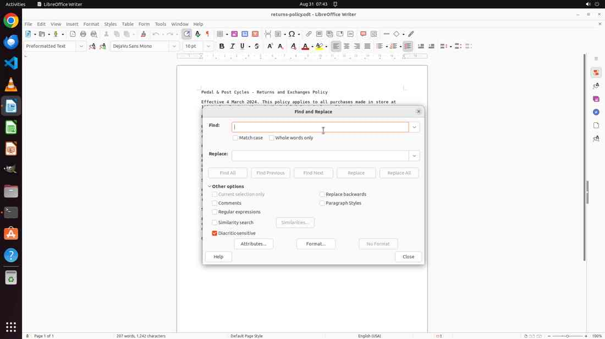
step 26 23:43:32
THINKINGThe Find field is focused. I'll type the search text, then click the Replace field and type the replacement, then click Replace All. I can batch: type find text, click replace field, type replace text, click Replace All.
TOOL CALL<tool_call>
<function=computer_use>
<parameter=action>
type
</parameter>
<parameter=text>
Pedal & Post Cycles
</parameter>
</function>
</tool_call>
EXECUTED (pyautogui in VM)pyautogui.typewrite("Pedal & Post Cycles")
step 27 23:43:49
THINKING"Pedal & Post Cycles" is in the Find field. Now click the Replace field, type the replacement, then click Replace All. I'll batch these.
EXECUTED (pyautogui in VM)pyautogui.click(1262, 550)
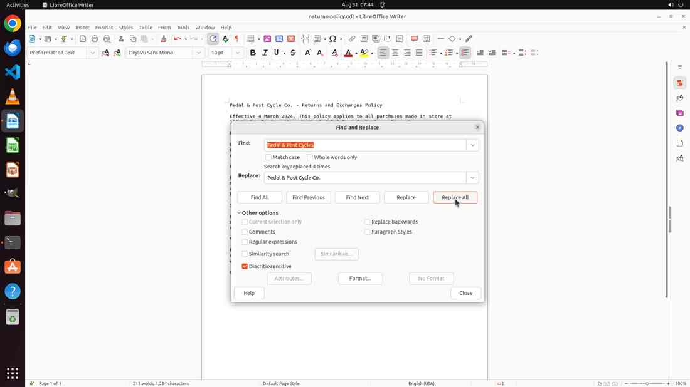
step 30 23:44:38
THINKING"Search key replaced 4 times." — exactly matching the 4 occurrences I identified. The title now reads "Pedal & Post Cycle Co. - Returns and Exchanges Policy".
Now close the dialog and format the four headings bold + 14pt. Let me close the Find & Replace dialog.
ACTION"Search key replaced 4 times." — all four occurrences updated. Now let me close the dialog and format the four headings.
EXECUTED (pyautogui in VM)pyautogui.click(1291, 817)
step 31 23:45:04
THINKINGNow I need to format the four headings bold and 14pt:
- "Return Window" at y=247
- "Condition of Goods" at y=309
- "Special Order Items" at y=382
- "Servicing and Warranty" at y=445
The most reliable way to select a whole heading line is to click at the start of the line and select to the end, or triple-click to select the paragraph. Triple-click selects the whole paragraph. Then apply Bold (Ctrl+B) and set font size to 14.
For each heading: triple-click on the heading text, then Ctrl+B, then set font size in the size box to 14.
The font size box is at ~410,97. I'll triple-click the heading, press Ctrl+B, then triple-click the size box, type 14, Enter.
Let me do "Return Window" first: triple-click at (460, 247), Ctrl+B, then set size. I'll batch per heading but need to set size via the box. Let me do it carefully.
For the size box: triple-click at (415, 97) to select existing "10 pt", type "14", Enter.
Let me do heading 1.
ACTIONNow let me format the four headings. I'll select each heading with a triple-click, apply bold, and set the size to 14pt. Starting with "Return Window".
EXECUTED (pyautogui in VM)pyautogui.tripleClick(689, 369)
step 32 23:45:25
THINKING"Return Window" is selected (2 words, 13 characters). Now apply Bold (Ctrl+B) and set font size to 14. I'll press Ctrl+B, then set size via the size box: triple-click the size box, type 14, Enter.
ACTION"Return Window" is selected. Let me apply bold and set the size to 14pt.
EXECUTED (pyautogui in VM)pyautogui.hotkey("ctrl", "b")
step 33 23:45:36
THINKING"Return Window" is now bold (Bold button highlighted). The selection is still active. Now set font size to 14: triple-click the size box (at ~415,97), type 14, Enter. The selection in the document should remain when I interact with the size box. Let me do it.
ACTIONBold applied. Now let me set the size to 14pt via the font size box.
EXECUTED (pyautogui in VM)pyautogui.press("return")
step 36 23:46:18
THINKING"Return Window" is now bold and 14pt (larger). The other headings shifted down slightly. Now the heading positions:
- "Condition of Goods" now at y=313
- "Special Order Items" at y=386
- "Servicing and Warranty" at y=448
Now format "Condition of Goods": triple-click at (468, 313), Ctrl+B, set size 14. The size box currently shows 14pt, so I just need to select the heading, Ctrl+B, then re-verify size is 14. But since the default heading might reset to 10, I should set it. Actually after selecting a new heading, the size box will show its current size (10). So I'll need to set 14 again.
Let me do "Condition of Goods".
ACTION"Return Window" is now bold and 14pt. Now the second heading "Condition of Goods".
EXECUTED (pyautogui in VM)pyautogui.tripleClick(701, 468)
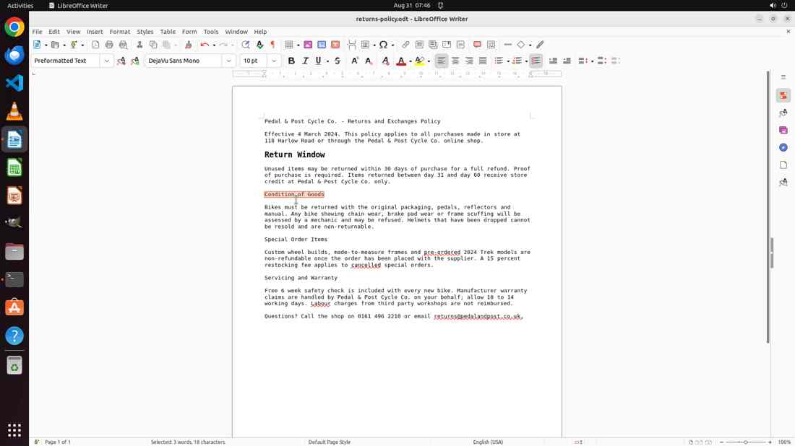
step 37 23:46:28
THINKING"Condition of Goods" is selected (3 words, 18 characters), size box shows 10 pt. Now apply Bold and set size to 14. I'll press Ctrl+B, then triple-click the size box, type 14, Enter. I can batch these since the outcome is predictable.
ACTION"Condition of Goods" is selected. Let me apply bold and set 14pt.
EXECUTED (pyautogui in VM)pyautogui.hotkey("ctrl", "b")
step 38 23:46:44
THINKINGBold applied to "Condition of Goods" (now appears bold). Now set size to 14: triple-click the size box, type 14, Enter. I'll batch these three actions.
EXECUTED (pyautogui in VM)pyautogui.typewrite("14")
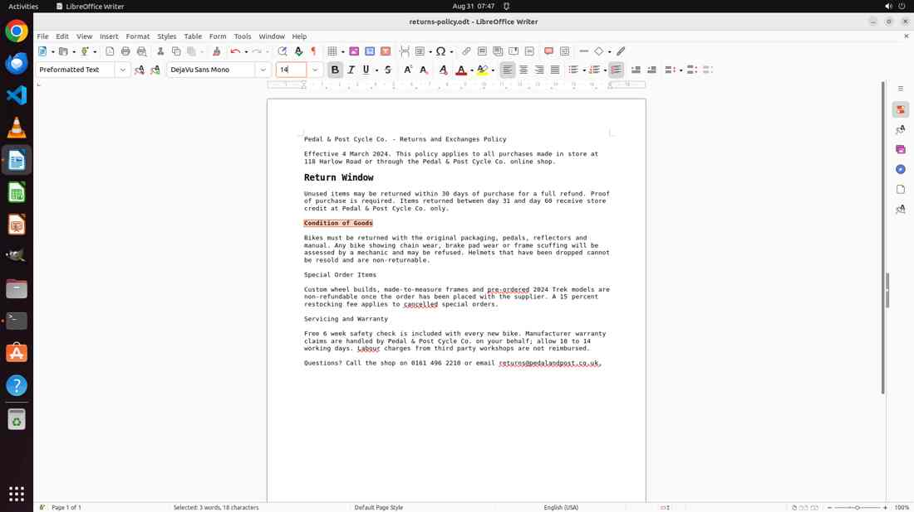
step 39.2 23:47:13
same model call as the previous action
EXECUTED (pyautogui in VM)pyautogui.press("return")
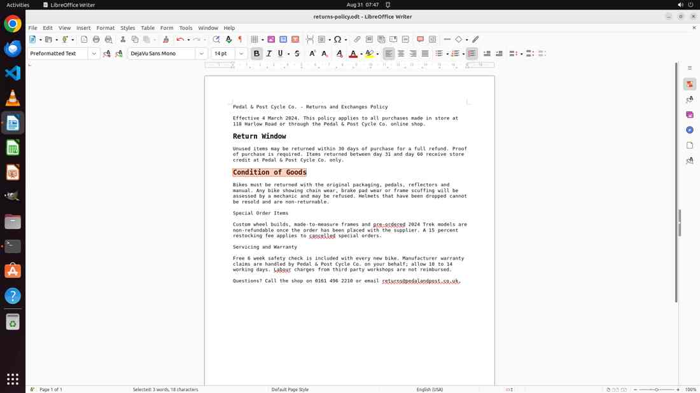
step 40 23:47:27
THINKING"Condition of Goods" is now bold and 14pt. Now the third heading "Special Order Items" is at y=390. Let me select it, apply bold, set 14pt. I'll triple-click, then Ctrl+B, then triple-click size box, type 14, Enter. I can batch the whole sequence since positions are predictable and the size box location is fixed.
ACTION"Condition of Goods" done. Now the third heading "Special Order Items". Let me select it, bold it, and set 14pt.
EXECUTED (pyautogui in VM)pyautogui.hotkey("ctrl", "b")
step 43.2 23:48:31
same model call as the previous action
EXECUTED (pyautogui in VM)pyautogui.tripleClick(615, 144)
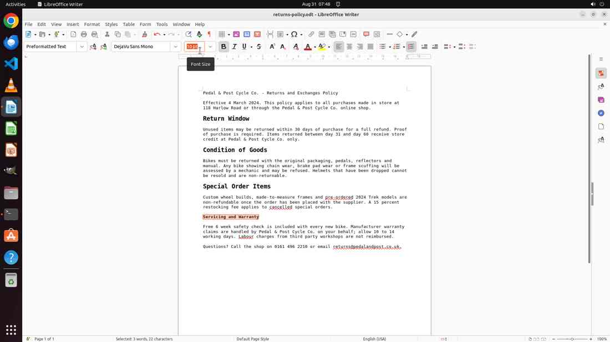
step 43.3 23:48:34
same model call as the previous action
EXECUTED (pyautogui in VM)pyautogui.typewrite("14")
step 43.4 23:48:38
same model call as the previous action
EXECUTED (pyautogui in VM)pyautogui.press("return")
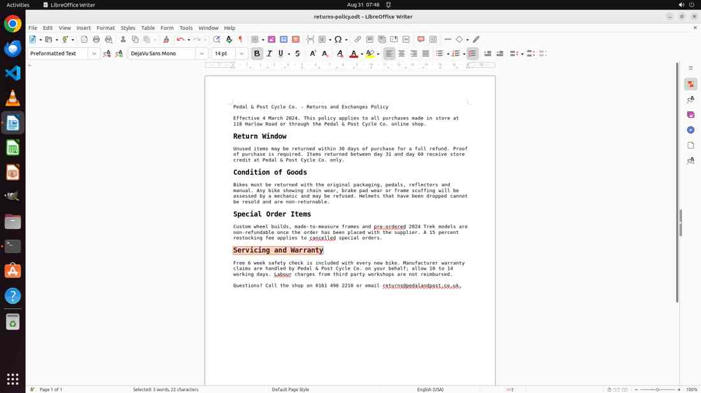
step 44 23:48:54
THINKINGAll four headings are now bold and 14pt:
- Return Window
- Condition of Goods
- Special Order Items
- Servicing and Warranty
Now I need to:
1. Save the ODT (Ctrl+S, keep format) to persist changes.
2. Export as PDF to /home/user/documents/returns-policy.pdf.
Let me first save the ODT with Ctrl+S (it'll prompt to keep ODF format). Then export PDF via File → Export As → Export as PDF.
Let me save first.
ACTIONAll four headings are now bold and 14pt. Let me save the ODT first (keeping ODF format).
EXECUTED (pyautogui in VM)pyautogui.hotkey("ctrl", "s")
step 45 23:49:12
THINKINGNo format dialog appeared yet — it may have appeared and I need to confirm. Actually the screenshot shows no dialog. The Ctrl+S might not have triggered the "Keep Current Format" dialog yet, or it appeared and dismissed. Wait, the selection is still showing. Let me take a screenshot to check if a dialog appeared. Actually the current screenshot already shows no dialog. Perhaps the save happened without a prompt, or the dialog is about to appear. Let me press Enter in case the "Use ODF Format!" dialog is the default focused button. Actually, pressing Enter blindly could be risky. Let me take a screenshot to confirm state.
ACTIONLet me check whether a format dialog appeared.
THINKINGNo dialog appeared. It's possible the Ctrl+S was captured while the font size box had focus (the tooltip "Font Size" is showing because the cursor is hovering there), so the keystroke may not have triggered the save. To be safe, let me click into the document body first to move focus to the editor, then Ctrl+S again. I'll click on empty space in the document.
ACTIONNo dialog appeared — focus may have been on the size box. Let me click into the document and save again.
EXECUTED (pyautogui in VM)pyautogui.click(899, 898)
step 46.2 23:49:37
same model call as the previous action
EXECUTED (pyautogui in VM)pyautogui.hotkey("ctrl", "s")
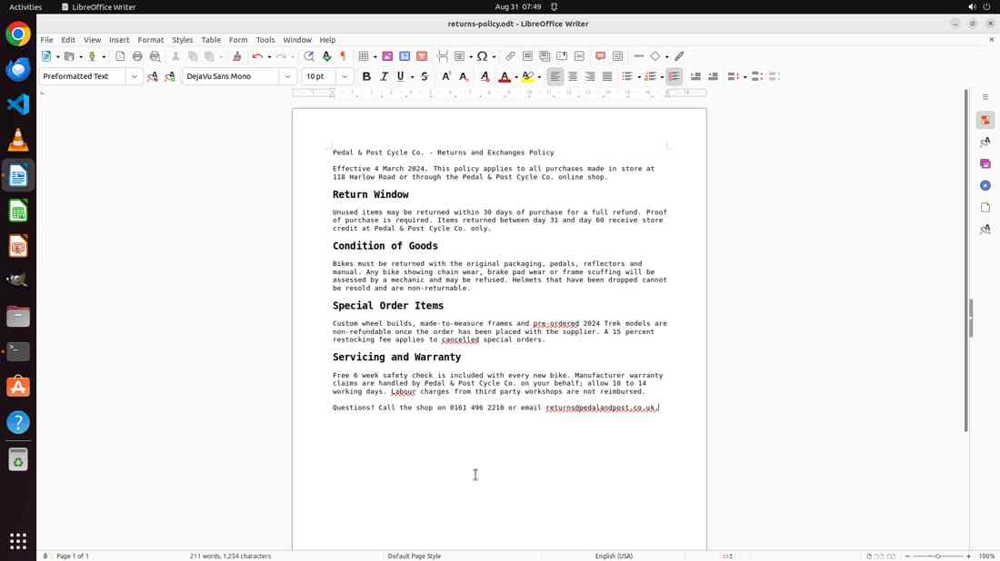
step 47 23:49:49
THINKINGStill no "Keep format" dialog. It's possible the document was already saved by the first Ctrl+S (which actually worked) and this second Ctrl+S found nothing to save. But the first time no dialog appeared either, which is odd for ODT save in LibreOffice — normally it asks to keep ODF format only when saving to a non-ODF format. Actually, saving a native .odt does NOT prompt for format — that prompt only appears for Word formats. So no dialog is expected for .odt. Good, so the file is saved.
Now let me export as PDF. File → Export As → Export as PDF. Let me use the menu.
ACTIONThe ODT is saved (no format prompt is expected for native .odt). Now let me export as PDF via File → Export As → Export as PDF.
EXECUTED (pyautogui in VM)pyautogui.click(132, 478)
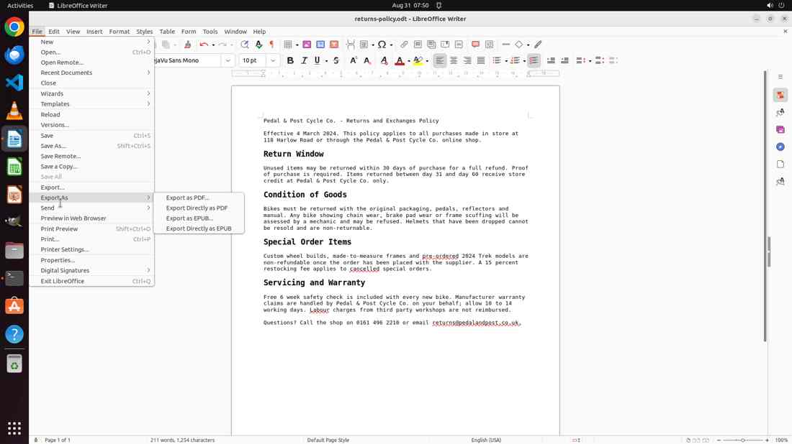
step 49 23:50:17
THINKINGSubmenu shows "Export as PDF...". I'll use "Export Directly as PDF" to skip the options dialog, which goes straight to a file save dialog. Actually, "Export as PDF..." opens the PDF options dialog first, then the save dialog. "Export Directly as PDF" goes straight to the file save dialog with default settings, which is simpler and fine. Let me click "Export Directly as PDF".
EXECUTED (pyautogui in VM)pyautogui.click(476, 503)
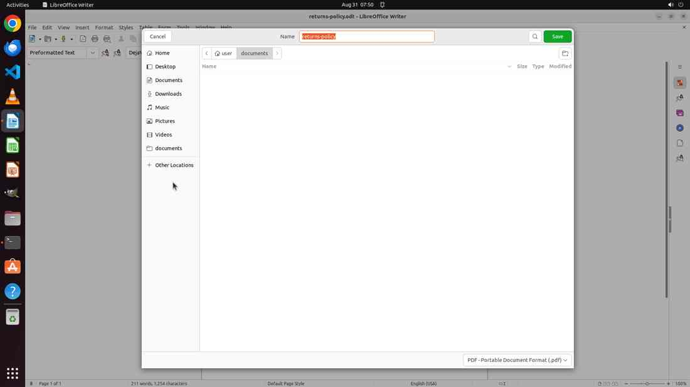
step 50 23:50:28
THINKINGThe save dialog is already in the correct location: the path breadcrumb shows "user > documents" (the lowercase documents folder, which is where the ODT lives). The Name field shows "returns-policy" and the format is "PDF - Portable Document Format (.pdf)". This is exactly what I want: returns-policy.pdf in /home/user/documents/.
The name field is already selected/highlighted. I'll just click Save. The base name "returns-policy" is correct. Let me click Save.
ACTIONThe dialog is already in the correct `documents` folder with the name "returns-policy" and PDF format selected. This will create `returns-policy.pdf` next to the ODT. Let me click Save.